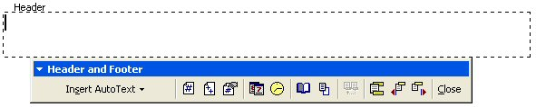
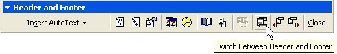
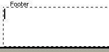
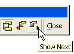
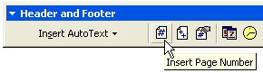
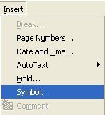
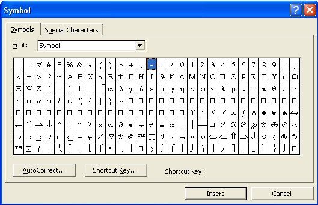
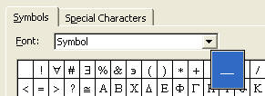
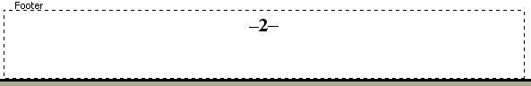

Free
computer Tutorials
|
Free
computer Tutorials
|
|
 home home |
|
||||
How to Insert Page Numbers in Microsoft WordMicrosoft Word allows you to insert page numbers into your document. This is done (usually) in the Footer area of the page. The Footer is just the opposite of the Header. You can do the same things with the Footer as you can with the Header. We'll see how to insert page numbers into the Footer. Let's get started. Click your mouse anywhere on the first page of your document, so that your cursor is blinking on and off somewhere in your text. To put pages numbers into your document, you could click on Insert > Page numbers. But we'll use the Header and Footer method, to give you some practice with the Header and Footer toolbar.
 We can use the toolbar to insert page numbers into the story. But as we want our page numbers to appear at the bottom of the page, we need to switch to Footers.

 But we don't want any page numbers on the first page. We've already set it up to have a different first page, so no page numbers will appear there anyway. But we can jump to the footer area of our second page quite easily. Click the "Next" icon in the toolbar  You will be taken to the Footer area of your second page. We can now insert our page numbers. With the cursor flashing in the Footer area, click the Insert Page Number icon in the toolbar, as in the image below.  When you click the icon, the number 2 should appear in your Footer, on the left hand side. You could leave it like that and click the Close button. When you went to Print Preview, you'd see that Word has automatically inserted page numbers on all your pages. But we'll apply some formatting to the numbers, so that they look more professional. You can format text in a Header and Footer just like you can any other text.
 You should get the following dialogue box popping up:  You can insert any symbol you like just by clicking on one, then clicking the Insert button. The symbol we're after is the one highlighted in the picture. Click on it with your left mouse button to see a bigger version  Click the Insert button at the bottom of the dialogue box. A long dash will be inserted just before your number 2. But the Symbol dialogue box won't disappear. So click the Close button.
We can align our page numbers so that they are all in the middle of the page. To align the page numbers in the middle, position your cursor so that it is at the start of the line, just before the first long dash. Click the centre align icon in your toolbar. Your Footer should now look like this one:  Finally, click "Close" on the Header and Footer toolbar. To view the results of all your hard work, Go into Print Preview and zoom in close. You'll see that your page numbers have been added to all the pages in your story. And those long dashes on either side have been added, too.
If you have a printer, try printing a few of the pages out. The Header and Footer we've just added looks quite professional. Create a booklet in Microsoft Word --> |
|||||
|